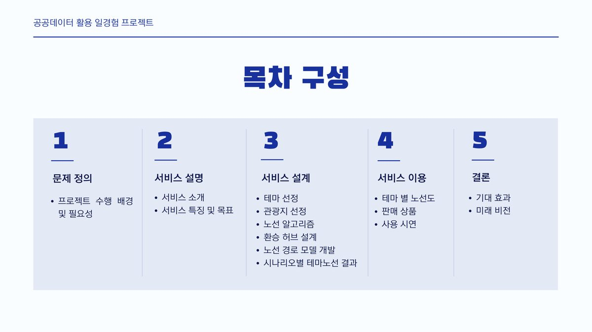
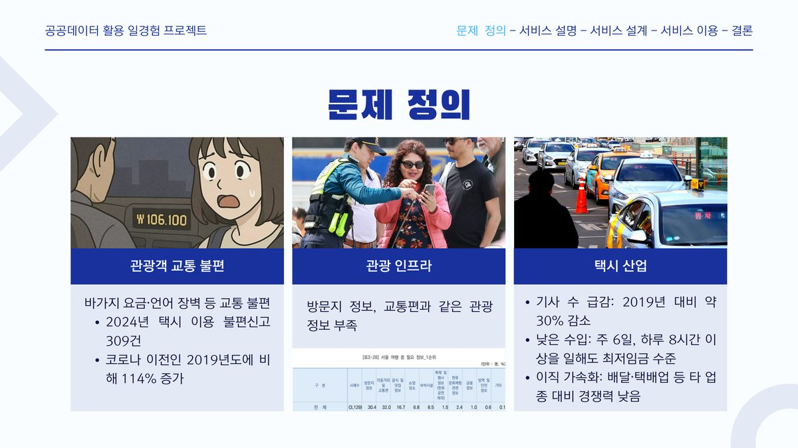

관광 순환 택시 경로 최적화
공공 교통·관광 데이터로 순환 택시의 최적 경로를 설계하고 실측 오차까지 보정한 모델
±4.8%실측–예측 오차
20%최장 구간 단축
65%경로 표준편차 개선
배경 🌱
서울 도심의 관광 이동 효율을 높이기 위해 순환형 택시 노선을 설계하는 과제였습니다. 관광지를 한 번씩 돌고 출발점으로 돌아오는 경로를 짜야 하는데, 방향에 따라 이동 시간이 달라집니다.
문제 정의 🤔
공공데이터의 예상 소요시간과 실제 교통 패턴 사이 오차가 커서, 최적 경로를 계산해도 그 결과를 믿을 수 없었습니다. 모델이 맞는지 아닌지를 말할 수 없는 상태였습니다.
결과 화면 🖼



데이터 📦
도로망 이동시간
GIS로 산출한 실제 도로망 기준 이동시간을 최적화의 비용 계수로 입력
관광지 · 정류 지점
공공 관광 데이터 기반 거점
검증
피크 · 야간 · 주말 시나리오별 실측 대조
접근 🛠
- 방향에 따라 비용이 다른 비대칭 순회 문제(ATSP)로 정식화하고 PuLP로 풀었습니다.
- 가짜 순환(subtour)을 막기 위해
MTZ 제약: u_i − u_j + n·x_ij ≤ n − 1을 걸었습니다. 거점마다 방문 순서 변수를 주는 방식입니다. - 예측을 실측에 맞추기 위해
Global Time Multiplier를 도입했습니다. - 짧은 구간의 계통 오차는
Short-hop 거리버킷 휴리스틱으로 따로 보정했습니다. - 피크·야간·주말 시나리오를 나눠 돌려 결과가 조건에 따라 무너지지 않는지 강건성을 검증했습니다.
설계 결정과 근거 ⚖️
TSP가 아니라 ATSP로 봤다
일방통행과 회전 제약 때문에 A→B와 B→A의 소요 시간이 다릅니다. 대칭 가정을 쓰면 계산은 쉽지만 결과가 현실과 어긋납니다.
전역 보정 위에 구간별 보정을 하나 더 얹었다
전체에 배수를 곱하는 것만으로는 짧은 구간의 오차가 남습니다. 신호 대기나 회전처럼 거리에 비례하지 않는 시간이 짧은 구간에서 비중이 크기 때문입니다.
이슈 · 고민 기록 🚩
진행하며 실제로 막혔던 지점과 그때 내린 판단입니다.
전역 보정만으로는 짧은 구간이 계속 틀렸다
Global Multiplier로 평균 오차는 줄었지만 짧은 구간일수록 오차가 남았습니다. 거리 버킷별로 따로 보정하는 Short-hop 휴리스틱을 얹어 이 계통 오차를 잡았습니다.
배운 것평균이 맞았다고 구간별로 맞는 것은 아니다.
결과 📈
실측–예측 오차를 ±4.8%로 좁혔고, 최장 구간을 20% 단축하면서 경로 안정성(표준편차)을 65% 개선했습니다. 인턴 과정에서 멘토·팀원 투표로 '최고의 태도 인턴상'(2명 선정)을 받았습니다.
한계 🔍
이 결과가 틀렸을 수 있는 지점입니다.
- 거점 수가 늘면 ILP 제약이 급격히 늘어 계산이 어려워집니다. 규모가 커지면 휴리스틱이나 문제 분할이 필요합니다.
- 보정 계수는 관측한 시나리오에 맞춘 값이라 다른 계절·행사 상황에는 재추정이 필요합니다.
금융 직무와의 연결 🎯
포트폴리오 최적화 · 제약 하 의사결정
이 프로젝트에서 얻은 역량이 금융 직무에서 어떻게 쓰이는지
- 제약 조건 하 최적화 — ILP 정식화와 제약 설계는 자산 배분·한도 관리와 같은 계열의 문제입니다.
- 모델–현실 오차 보정 — 이론값을 실측에 맞추는 보정 엔진을 만들고 오차를 ±4.8%로 관리했습니다.
- 시나리오 강건성 검증 — 피크·야간·주말로 나눠 결과가 조건 변화에 무너지지 않는지 확인했습니다. 스트레스 테스트와 같은 발상입니다.
회고 💡
최적화 모델의 값어치는 해의 품질보다 현실과의 오차를 얼마나 정직하게 다루는가에서 나온다는 것을 배웠습니다.